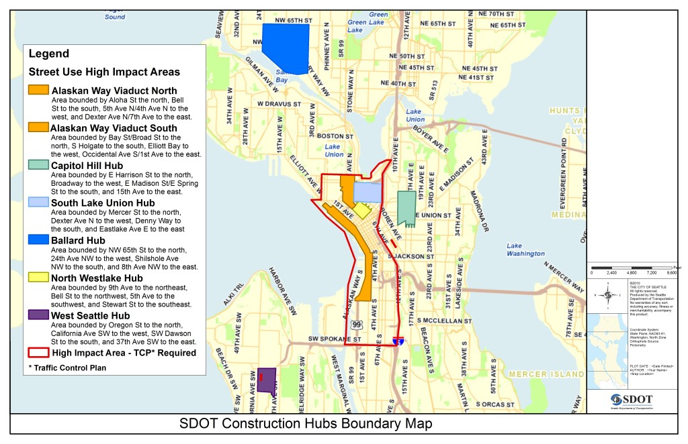
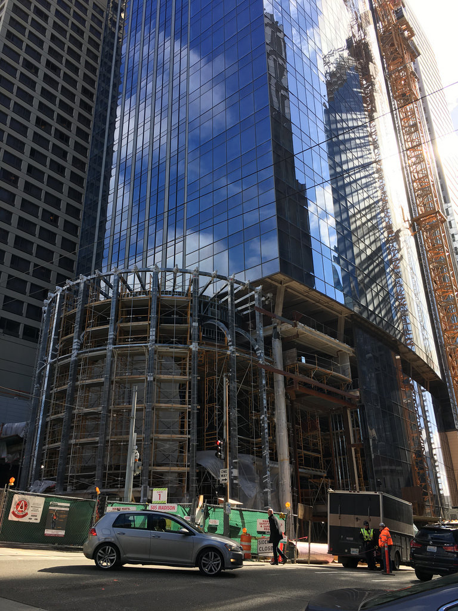

About Current Project

By June of 2019, we will produce a Five-Year Information Infrastructure Plan (IIP) to distribute current, accurate and actionable information about the state of Seattle’s transportation system to users. The IIP will support SDOT’s modal plans. It will set the goals and strategies for improving the flow and quality of information within SDOT and from SDOT and service providers to the users of the transportation system. The IIP will deliver an actionable set of policies, projects and performance metrics for the next five years. We need the IIP because using and managing a city’s transportation system is increasingly about the access to and availability of accurate real-time (or near real-time) information. We will develop the IIP in partnership with the community. The IIP will be guided by the values and principles set out in Seattle’s Comprehensive Plan and the Seattle New Mobility Playbook. The IIP will be technology agnostic and focus instead on the information needs of the users and system managers. It will set policies for protecting the privacy and rights of users and communities and set a framework for protecting the cyber security of users, communities and SDOT’s information systems. It will outline the information and interoperability requirements for transportation service providers to operate in Seattle. It will design accountability into the system by setting standards for accessibility, transparency, application interfaces, and open data protocols.
We will be successful if the IIP equips SDOT to turn information about the transportation system into actionable assets that will deliver value to everyone in the city. We will be successful if the IIP helps SDOT and Seattle to be more resilient in the face of disruptions, technological or otherwise. We will be successful if the information infrastructure we build because of the IIP allows users of the transportation system (individuals, organizations and automatons; users and providers) to make better informed choices; and managers of the system (SDOT and partner agencies) to deliver a more user friendly, seamless, and efficient transportation experience. We will be successful if the information infrastructure we build because of the IIP exposes the social and racial inequality and injustice in our transportation system. The IIP should help us to dismantle these inequalities and prevent their institutionalization in emerging transportation services and in our investments in the system.